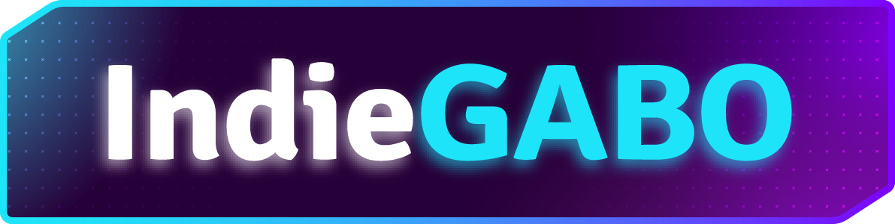
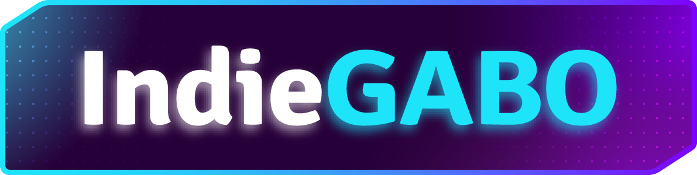

Utilidades do IndieGabo!
Boas vindas à documentação das Utilidades do IndieGabo! Aeeeeeeee! o/
Sobre o projeto
Esta é uma coleção de ferramentas úteis para desenvolvedores de jogos que usam a Unity. Principalmente para os desenvolvedores 2D.
O meu objetivo é fazer ferramentas fáceis de usar e iterativas, para que você possa usá-las como estão ou ter um ponto de partida para criar algo maravilhoso para seu jogo.
Versão atual
b-0.0.1
Esta é uma versão beta. Estou trabalhando no CharacterController2D e creio que assim que ele for finalizado, poderemos lançar um pacote com uma versão 1.0.0 estável.
O trampo atual
CharacterController2D. Finalizando alguns aspectos de movimentação, como agachar e poder agarrar em quinas. O próximo passo vai ser adicionar algumas maneiras de atacar.
Loja na Itch
Eu uso estas ferramentas para criar assets e distribuí-las no itch.io. É uma forma deu entregar algo que que faça o seu apoio valer a pena. Assim eu posso continuar criando coisas e sonhar. Sinta-se a vontade para navegar na minha página da itch e encontrar algo útil para você lá.
Eu tento criar assets completamente funcionais e fáceis de adapatar.
Contribua
Se você quiser contribuir com este projeto, entre em contato comigo em qualquer uma das minhas redes sociais listadas abaixo.

Não se esqueça de considerar se juntar ao meu patreon para ter acesso aos assets pagos na itch.io. Em outras palavras: você poderá baixar os assets pagos da minha itch.io sem precisar gastar nada além da sua assinatura no patreon.
No entanto, se você quiser apenas doar pois acha meu trabalho útil, clique no botão abaixo:
Primeiros Passos
Ferramentas Disponíveis
Onde achar o IndieGabo
Veja este e outros projetos na minha página do Github .
Eu uso meu canal do Youtube para postar tutoriais e insights.
Você pode bater um papo comigo enquanto eu estou streamando no meu canal da Twitch.
Siga @indiegabo no Instagram para entrar em contato comigo no dia-a-dia.